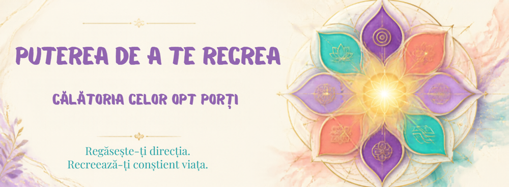
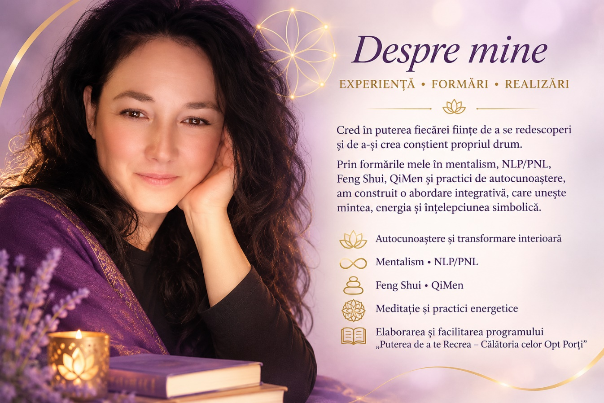

Regăsește-ți direcția
Descoperă ce contează pentru tine și aliniază-ți alegerile cu drumul tău autentic.
O călătorie de autocunoaștere în opt etape
Călătoria celor Opt Porți

O experiență de autocunoaștere și transformare interioară, dedicată celor care își doresc să depășească tiparele limitative, să își redescopere puterea interioară și să se alinieze cu drumul lor autentic.
Descoperă cine ești. Regăsește-ți direcția. Recreează-ți conștient viața.
Încep călătoria meaCălătoria ta începe cu o întrebare
Descoperă ce contează pentru tine și aliniază-ți alegerile cu drumul tău autentic.
Explorează o metodă care unește mintea, inima și spiritul într-o călătorie de autocunoaștere.
Transformă înțelegerea de sine în pași practici, alegeri asumate și schimbări cu sens.
Programul
Un parcurs experiențial de autocunoaștere, transformare interioară și reconectare cu sinele autentic, structurat în opt etape simbolice.
Nu îți spune cine trebuie să devii, ci îți oferă spațiul și instrumentele necesare pentru a descoperi cine ești și cum îți dorești să îți construiești propriul drum.
Află despre înscriereO întâlnire pe săptămână, timp de opt săptămâni. Fiecare întâlnire durează 120 de minute.
Într-un spațiu virtual dedicat participanților.
Meditații ghidate, exerciții practice, fișe de lucru și teme simple pentru acasă.
Programul este dedicat autocunoașterii și dezvoltării personale și nu înlocuiește serviciile medicale, psihologice sau psihoterapeutice.

Despre mine
Cred în puterea fiecăruia de a se redescoperi și de a-și crea conștient propriul drum.
Prin îmbinarea puterii minții, a meditației ghidate, a simbolisticii spirituale și a practicilor energetice, te însoțesc într-o călătorie de explorare a propriei ființe.
Rolul meu nu este să îți spun cine trebuie să devii, ci să te ghidez să descoperi cine ești cu adevărat, să îți asculți vocea interioară și să faci alegeri aliniate cu drumul tău autentic.
Să vorbimÎntrebări frecvente
Programul durează opt săptămâni, cu o întâlnire pe săptămână. Fiecare întâlnire are 120 de minute.
Programul are loc online, în direct, într-un spațiu virtual dedicat participanților.
Nu este necesară experiență anterioară în meditație sau practici spirituale.
Prețul și calendarul urmează să fie stabilite și vor fi comunicate înainte de deschiderea înscrierilor.
Primul pas
Simți că a venit momentul să te redescoperi?
Dacă programul „Puterea de a te Recrea – Călătoria celor Opt Porți” rezonează cu tine, scrie-mi. Sunt aici să îți răspund la întrebări și să te ajut să descoperi dacă această experiență este potrivită pentru tine.
Formularul de înscriere și adresa de e-mail profesională urmează să fie stabilite.